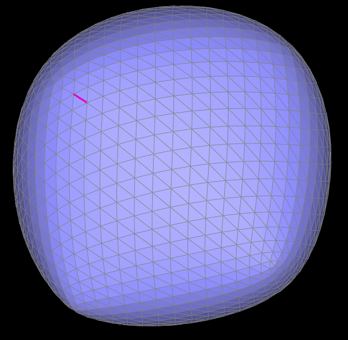
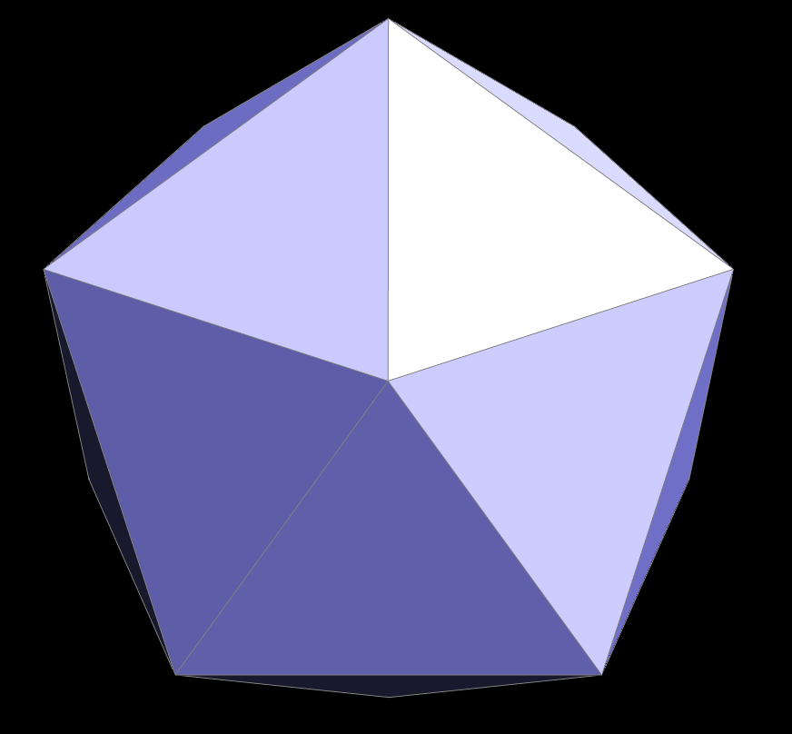

CS184/284A Spring 2025 Homework 2 Write-Up
Names: James Ni and Sonia Chacon
Link to webpage: cal-cs184-student.github.io/hw-webpages-paper-plane
Link to GitHub repository: github.com/cal-cs184-student/sp25-hw2-paper-plate
Overview
In Homework 2, the two main concepts we focused on were Bezier curves and triangle meshes implemented with the half-edge data structure. Bezier curves, and by extension Bezier surfaces, are used to create smooth curves and surfaces through de Castelijau's algorithm. Another way to represent a smooth surface is through triangle meshes, which makes up the second main concept of this assignment. We implemented various operations with triangle meshes which included edge splitting and edge flipping. Using these operations, we can subdivide an elementary mesh into a smoother one with more detail. Both approaches give us a way to construct arbitrary meshes.Section I: Bezier Curves and Surfaces
Part 1: Bezier curves with 1D de Casteljau subdivision
For each iteration of de Castelijau's algorithm, we calculate a new control point by interpolating between the current point and the next point using the parameter \(t\). Through every iteration, we get one less control point than before. Eventually, by iterating through this process, you will end up with a single point, which is the final answer.

|
||

|
Figure 1: A demonstration of de Castelijau's algorithm to a surface with 6 control points. Starting from left to right, top to bottom, the first 6 images demonstrate the calculation of control points until we arrive at a final point \(t\). The 7th image shows the resultant curve and the 8th image shows the resultant curve when the positions of the control points are modified.
Part 2: Bezier surfaces with separable 1D de Casteljau
With surfaces, we build on top of de Castelijau's algorithm from Part 1 as the basis for a 1D evaluation. We have a 2D matrix of control points, which are evaluated first by calculating all the 1D curves based on the rows of the control points with some scalar interpolated value \(u\). Each 1D evaluation produces a single point, and the final point can be calculated as another 1D evaluation of all the previous points with some scalar interpolated value \(v\).Figure 2: A Bezier surface of a teapot, demonstrating the 2D interpolation scheme based off 1D de Casteljau. Note the lack of surface normals resulting in an even surface shading. (However, it is certainly possible to compute and interpolate surface normals.)
Section II: Triangle Meshes and Half-Edge Data Structure
Part 3: Area-weighted vertex normals
We loop through all the half edges pointing away from the vertex usingh->twin()->next(), each of which corresponds to a separate face. We add Face::normal() to a running total since it is already normalized by the area of the face. (This is because the cross products of the vertices scale by the area, which are normalized out.) Finally, we normalize the total sum to get the normal corresponding to the vertex.
Figure 3: A comparison of flat shading (left), using only the face normals, and Phong shading (right), using interpolated vertex normals. Phong shading produces a much smoother shading of the surface without the need for a large, complex mesh.
Part 4: Edge flip
We assume the first halfedge is BC and it's twin is CB. This gives us a systematic way to label all the knowns we have. We map the faces ABC → ABD, DCB → DCA and the edge (and corresponding half-edges) BC → AD. Using this mapping, we can deduce the appropriate pointers for each half-edge. We also update the half-edge pointers for the vertices B, C and the faces, since they could be pointing to the old half-edge components. If the edge is a boundary edge, then we return immediately.For us, implementing the edge flip was relatively straightforward after our systematic labeling scheme, and no major bugs were encountered.
Figure 4: The teapot mesh with some edges flipped. Note several edge flip phenomena, such as depressions in the mesh creating shading artefacts, or near-degenerate flips creating triangles which seem to be larger than others.
Part 5: Edge split
Similar to an edge flip, we assume the edge being split is BC, and the corresponding half-edges are BC and CB. We label the current knowns, and the existing faces by their exterior half-edges CA and DC (which will correspond to CAM and DCM). We create: (1) 1 new vertex M with its position the mean of vertices B and C, mapping the edge BC → MC, (2) 2 new faces ABM and BDM, (3) 3 edges MA, MB, MD, and (4) their 6 corresponding half-edges. The edge MB is part of the original edge BC, so for our Loop subdivision algorithm, it is technically considered an old edge. Like with our edge flip implementation, we set and update the half-edge pointers for existing and new half-edges based on the mapping defined above. We similarly update the half-edge pointers for the faces CAM and DCM, and the vertex B, since they could be pointing to old half-edge components which have changed.For us, implementing the edge split was difficult because we did not read the instructions carefully and forgot to set the position of the new vertex M to be the mean of vertices B and C.
Figure 5: The teapot mesh with edges split (left) and edges split and flipped (right). Note that Loop subdivision consists of edge splits and flips, but without proper computation of vertex positions, shading artefacts caused by non-smooth face normals appear.
Figure 6: A demonstration of successful edge splits on a mesh with boundary edges. Only one new face is created per split.
Part 6: Loop subdivision for mesh upsampling
We implemented Loop subdivision using the steps described in the specification. This consists of- Computing new positions for existing vertices using the weighted sum of the existing vertex position \(p\), the sum of the neighbors' positions \(p_i\), and the number of neighbors \(n\) via the formula. \[\begin{align*} S(p) &= (1 - \alpha_n) p + \alpha_n \frac{1}{n} \sum_{i=0}^{n-1} p_i, \\ \alpha_n &= \begin{cases} 9/16 & n = 3, \\ 3/8 & n > 3. \end{cases} \end{align*}\]
- Computing positions for new vertices formed by splitting edges by looping through existing edges (and indexing them for the step 3). We use a similar weighted sum of adjacent vertex positions, with a weight of \( \frac{3}{8} \) for near vertices and \( \frac{1}{8} \) for far vertices. Far halfedges (corresponding to far vertices) are computed
h->next()->next()using the near halfedgeh(corresponding to near vertices). - Splitting every existing edge by iterating through the existing edge index and setting the position of the new vertex to the position calculated in step 2.
- Flip any new edge that connects an old and new vertex.
- Setting the position of the old vertices to the positions calculated in step 1.
|  |
Figure 7: Five successive Loop subdivisions applied to the cube mesh, starting at 0 subdivisions applied, and going first left to right then top to bottom. Observe the gradual smoothing of the cube's sharp edges. Because the cube mesh is fundamentally asymmetric, this also results in an asymmetric smoothed mesh.
Figure 8: A demonstration of how presplitting can help preserve sharp edges and corners, using the adversarial example of a cube mesh. The left figure demonstrates our presplitting near edges and corners, with a more extreme presplitting applied to the corner facing the viewer. The middle and right figures demonstrate through different perspective, the relative preservation of corners and edges compared to Figure 7.

|
|
Figure 9: A demonstration of how presplitting can help preserve symmetry, using the adversarial example of a cube mesh. Starting from left to right, top to bottom, we presplit edges so that the cube is symmetric. As shown in the next two figures, for each successive subdivision, we flip and split certain edges to continually ensure symmetry. After several subdivisions, the final figure demonstrates the relative preservation of symmetry compared to Figure 7.
For extra credit, we implemented \(\sqrt{3}\) subdivision according to the original 2000 paper by Leif Kobbelt. We first implement a function to split a face into three faces. We assume the half-edge pointer of the input face is the edge AB, and label the knowns. We then create (1) 1 new vertex M with its position the mean of the vertices A, B, C, (2) 2 new faces BCM, CAM (mapping the existing face ABC → ABM), (3) 3 new edges MA, MB, MC, and (4) their 6 corresponding half-edges. Beyond updating and setting new and existing half-edge pointers, we only need to additionally update the half-edge pointer of the input face.
The algorithm compared to Loop subdivision is then remarkably similar, consisting of the steps
- Computing new positions for existing vertices using the same formula, except with \[ \alpha_n = \frac{4 - 2 \cos \left( \frac{2\pi}{n} \right) }{9} \]
- Indexing then splitting every existing face in the mesh.
- Flipping all original edges.
- Setting the position of the old vertices to the positions calculated in step 1.
|  | ||
Figure 10: Five successive \(\sqrt{3}\) subdivisions applied to the icosahedron mesh, starting at 0 subdivisions applied, and going first left to right then top to bottom. Observe how a 60 degree rotation is applied after each subdivision, and a 9:1 split is applied every other subdivision (hence the name \(\sqrt{3}\)).

|
Figure 11: Two successive \(\sqrt{3}\) subdivisions applied to the bettle mesh, starting at 0 subdivisions applied, and going left to right. Observe no abnormalities arise despite the prescence of boundary edges.